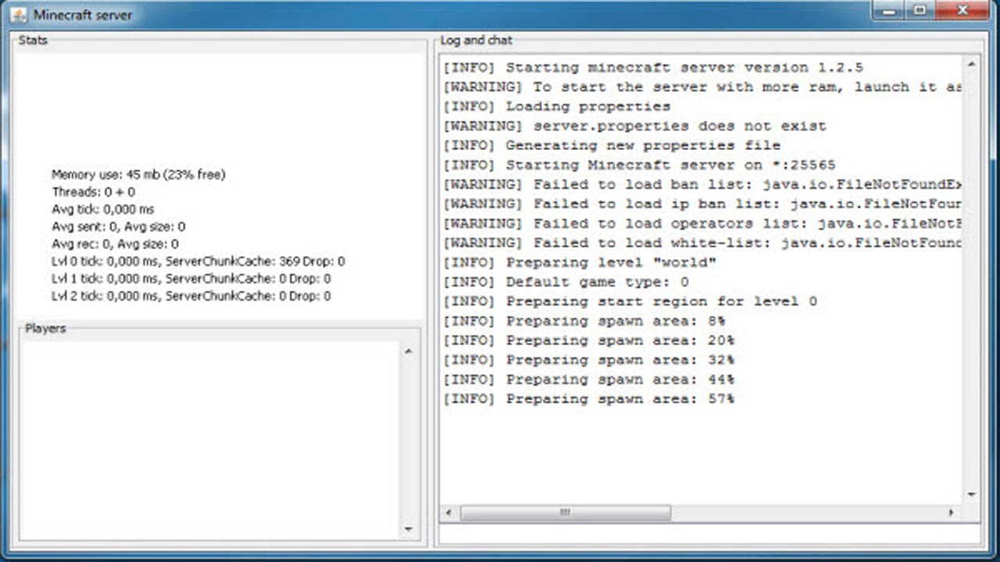

|| MINECRAFT СЕРВЕР ||
СОЗДАНИЕ СЕРВЕРА
1. Скачайте одно из ядер для сервере майнкрафт:
Первое: Spigot (более оптимизированно): НАЖИМАЙТЕ
Второе: CraftBukkit: НАЖИМАЙТЕ
2. Создайте папку в любом месте и переместите туда скачанное ядро.
3. Откройте ядро (нажмите на него 2 раза подряд левой кнопкой мыши). У вас буквально через 10 секунд должна появиться токая консоль:

4. Если в консоле появится примерно надпись: Done..., то пишем в поле ввода команды (оно внизу): stop.
5. Сервер создан. Его можно запускать как в пункте "3".
НАСТРОЙКА СЕРВЕРА
1. В папке сервера должен появиться файл "server" с расширением "properties". Открываем его.
Настройки:
generator-settings - эта строка задает шаблон генерации СУПЕРПЛОСКОГО мира.
force-gamemode - если true, то при подключении к серверу режим игры игрока изменятся на стандартный, указанный в gamemode.
allow-nether - данный параметр определяет возможность перехода в Нижний мир. Если отключить, все игроки, находившиеся в Нижнем мире, будут перемещены в обычный. Не влияет на переход в Край.
enforce-whitelist - позволяет включать/отключать перезагрузку вайтлиста при заходе игрока, прежде чем отключить его от сервера. Когда эта опция включена, сервер кикнет игрока только после того, как автоматически перезагрузит вайтлист для поиска изменений. false - игроки не будут отключены от сервера, если их нет в вайтлисте. true - игроки будут отключены от сервера, если их нет в вайтлисте. Требуется проверка перевода.
gamemode - стандартный игровой режим, автоматически устанавливаемый всем впервые зашедшим на сервер игрокам. Режим отдельного игрока меняется командой /gamemode. survival — выживание. creative — творчество. adventure — приключение. spectator — наблюдение.
broadcast-console-to-ops - позволяет вывести результат выполнения команды в консоли всем операторам сервера.
enable-query - позволяет активировать протокол GameSpy4 для прослушки сервера (получении информации о сервере).
player-idle-timeout - если не поставлен ноль, то игроки будут автоматически отключаться от сервера, если они ничего не делали в течение указанного времени (в минутах).
difficulty - уровни сложности: peaceful — мирная, easy — лёгкая, normal — Нормальная, hard — Сложная.
spawn-monsters - если значение параметра true, то, как и в одиночной игре, в ночное время и в тёмных пещерах на карте будут появляться враждебные мобы и будут стараться нанести вред игрокам на сервере. Если значение false, враждебные мобы (например, скелеты, зомби) не будут автоматически появляться во время игры, однако их можно заспаунить с помощью яиц призывания. Все находившиеся на карте мобы останутся.
op-permission-level - позволяет изменять права операторов. 1 — операторы могут ломать / ставить блоки внутри радиуса защиты территории спауна. 2 — операторы могут использовать команды /clear, /difficulty, /effect, /gamemode, /gamerule, /give, /tp, и могут изменять командные блоки. 3 — операторы могут использовать команды /ban, /deop, /kick, и /op. 4 — операторы могут использовать команду /stop.
pvp - включает/отключает получение урона игрокам от атак других игроков на сервере. При true игроки смогут «воевать» между собой, убивая друг друга. Если уставлено значение false, игроки не смогут наносить прямой урон один другому.
snooper-enabled - разрешает серверу отправлять некоторую статистику и данные разработчикам.
level-type - определяет тип мира.
hardcore - включает на сервере режим Хардкор. После смерти — переход в режим наблюдателя.
enable-command-block - позволяет использовать командный блок. Эта опция не генерируется при первой загрузке, а появляется при первой попытке использования командного блока.
max-players - указывает максимальное допустимое количество игроков на сервере.
network-compression-threshold - по умолчанию он позволяет пакетам размером n-1 байт нормально работать, но пакет, состоящий из n байтов или более, будет сжат. Таким образом, меньшее число означает большее сжатие, но сжатие небольшого количества байтов может на самом деле привести к большему результату, чем то, что произошло. -1 - отключить сжатие. 0 - сжать все. Примечание: интернет требует, чтобы пакеты размером менее 64 байтов дополнялись до 64 байтов. Таким образом, установка значения ниже 64 может быть нецелесообразной. Также не рекомендуется превышать 1500 байт.
resource-pack-sha1 - необязательный SHA-1 дайджест пакета ресурсов, в шестнадцатеричном виде в нижнем регистре. Рекомендуется указать это. Это не используется для проверки целостности пакета ресурсов, но повышает эффективность и надежность кэширования.
max-world-size - устанавливает границу мира на выбранном радиусе, считая от нулевой координаты. Установка границы, выходящей за пределы мира не сделает ничего. Например: если указан радиус в 1000 блоков, то вы получите рабочее пространство 2000 х 2000 блоков или если указан радиус в 4000 блоков, то вы получите рабочее пространство 8000 х 8000 блоков.
server-port - данный параметр определяет значение порта в протоколах TCP и UDP, который будет использовать сервер игры. Стандартный для Minecraft порт — 25565. Рекомендуется не изменять значение, т.к. для входа на сервер, использующий стандартный порт, игроку будет достаточно набрать IP или DNS адрес, без указания порта, а также при использовании других портов есть вероятность того, что этот порт уже будет занят другим сетевым ресурсом. Если вы всё же хотите указать порт вручную, выбирайте числа побольше и избегайте популярных портов: 80 и 8080 (web-сервер), 21 (ftp-сервер), 22 (ssh-сервер), 143 (imap), 6969 и 6881—6889 (bittorrent) и др. Например, порт 23000 подойдёт.
server-ip - указывает IP-адрес сервера, который будет использоваться другими игроками для подключения к этому серверу. Данное поле рекомендуется оставлять пустым, но если вы хотите дать серверу особый IP-адрес, то можно воспользоваться этим параметром, чтобы задать его. (Нельзя указывать ip-адрес своего компьютера, из-за этого сервер просто вылетит и не будет запускаться, пока не замените его на другой).
spawn-npcs - разрешить появление NPC в деревнях.
allow-flight - разрешает игроку совершать полёты по миру Minecraft. Эта опция действует только на полёты в режиме Выживание и оказывает эффект только при наличии соответствующего плагина (например, Flight). На полёты в режиме Творчество никак не влияет.
level-name - название папки с файлами карты, которую будет использовать сервер во время игры. Данная папка размещена в том же каталоге, где находится сервер. Если её не окажется, сервер автоматически сгенерирует новый мир и поместит его файлы в папку с этим названием.
view-distance - регулирует радиус обновляемых чанков для отсылки игроку.
resource-pack - местоположение ресурсов, которые сервер предложит загрузить игроку при соединении. В данном поле нужно указать прямую ссылку на zip-архив.
spawn-animals - аналогично spawn-monsters, но для дружелюбных мобов (коровы, свиньи, овцы…).
white-list - позволяет включать/отключать использование вайтлиста на сервере. При true администратору сервера необходимо будет вручную добавлять ники игроков в белый список. Если установлено значение false, любой игрок сможет зайти на данный сервер, зная его IP-адрес и порт. Администраторы сервера имеют возможность зайти на сервер вне зависимости от белого списка.
generate-structures - генерировать ли структуры (сокровищницы, крепости, деревни…).
online-mode - этот параметр позволяет включить/выключить режим онлайна. Если его выключить, то на сервер смогут заходить только по локальной сети или с этого компьютера и с любым аккаунтом (даже пиратским).
max-build-height - указывает максимальную высоту постройки на вашем сервере. Выше этого уровня нельзя будет ломать или ставить блоки. Местность может генерироваться выше этого уровня, также можно разрушать блоки при помощи ТНТ и огня. Кроме того, выше границы работают вёдра (ошибка).
level-seed - входные данные (зерно) для генератора уровня. Если вы хотите создать случайный мир — оставьте данное поле пустым.
prevent-proxy-connections - не трогайте (не нужная функция).
use-native-transport - улучшение производительности сервера Linux: оптимизировать отправку / получение пакетов в Linux: true - включить, false - выключить.
enable-rcon - позволяет использовать удаленный доступ к консоли сервера.
motd - описание сервера, отображаемое при подключении в списке серверов. Поддерживает форматирование текста.
УСТАНОВКА ПЛАГИНОВ
Поместите файл плагина в папку где находится сервер - plugins. После запуска сервера плагины загрузятся и для их настройки перейдите в папку plugins и найдите папку с названием похожим на название плагина, в этой папке находятся файлы, которые можно настроить.
Спасибо за внимание, ФУТУР!